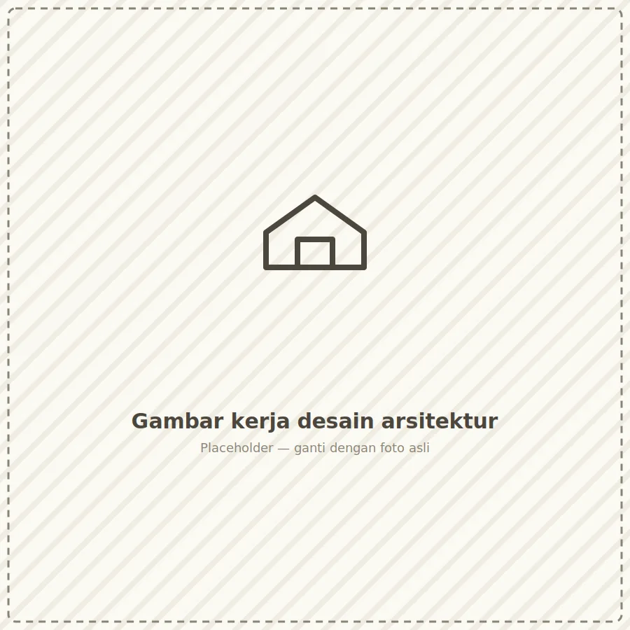
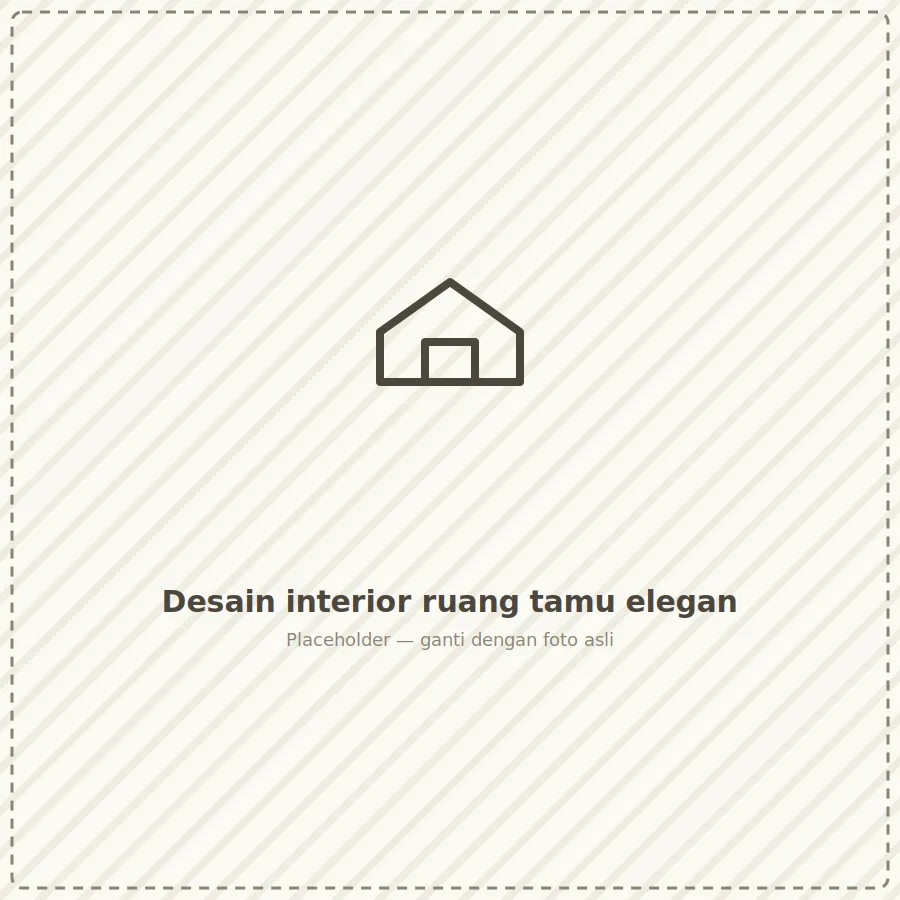
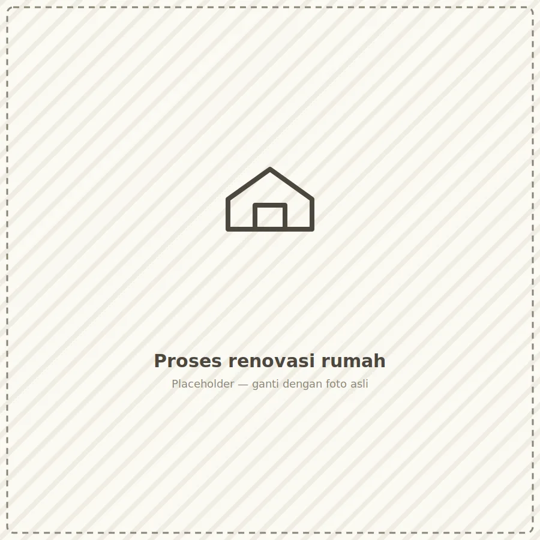
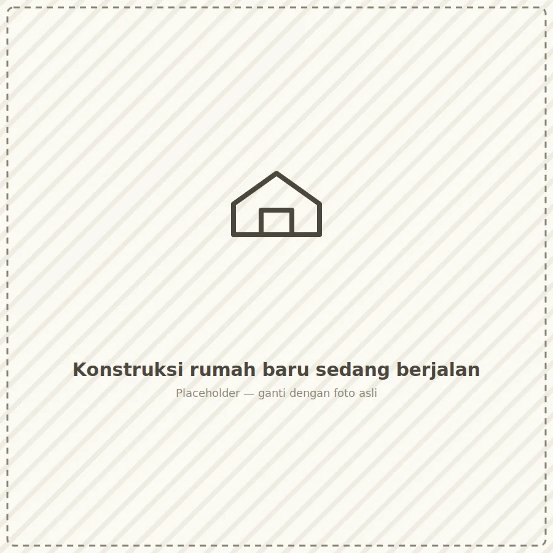

Kami merancang denah, tampak, potongan, hingga gambar kerja detail (DED) untuk hunian, ruko, maupun gedung komersial — memastikan bangunan efisien secara struktur namun tetap estetis.

Mulai dari konsep gaya, tata letak furnitur, pemilihan material & pencahayaan, hingga kustomisasi furnitur — kami memastikan setiap sudut ruang nyaman dipakai sekaligus indah dipandang.

Baik renovasi total maupun sebagian — atap bocor, fasad kusam, dapur sempit, atau ingin menambah lantai — tim kami menangani dari bongkar, struktur, hingga finishing akhir.

Pembangunan turnkey dari lahan kosong hingga siap huni. Kami mengelola seluruh subkontraktor, material, dan jadwal agar Anda cukup memantau progres tanpa pusing teknis.
Ruko, kafe, dan kantor kecil-menengah — menonjolkan brand identity klien lewat interior yang fungsional dan menarik pengunjung.
Ruko · Kafe · KantorBagi Anda yang ingin membangun sendiri namun butuh estimasi biaya akurat dan pendampingan pengambilan keputusan teknis.
Estimasi DetailKelima tahap ini berlaku untuk seluruh jenis layanan — berjalan berurutan dari kiri ke kanan agar setiap keputusan terekam jelas.
Diskusi kebutuhan, referensi gaya, dan estimasi anggaran kasar.
Pengukuran lahan, pengecekan kondisi bangunan & dokumentasi foto.
Gambar kerja, visual 3D, dan rincian anggaran biaya disetujui bersama.
Eksekusi lapangan dengan pengawasan harian & laporan progres mingguan.
Quality check bersama klien, dokumentasi akhir, dan penyerahan garansi.
Harga berikut adalah estimasi awal per m² — angka final ditentukan setelah survey lokasi dan penyusunan RAB.
Untuk Anda yang ingin gambar kerja lengkap namun mengeksekusi dengan kontraktor sendiri.
Desain lengkap plus pelaksanaan konstruksi dalam satu tanggung jawab tim.
Untuk proyek ruko, kantor, atau bangunan komersial multi-lantai.
Bisa. Selisih biaya akan disesuaikan dengan progres pekerjaan yang sudah berjalan, tanpa menghitung ulang dari nol.
Untuk Paket Terpadu dan Korporat, material standar & tenaga kerja sudah termasuk. Material di luar spesifikasi standar dihitung terpisah.
Perubahan minor dapat diakomodasi dengan penyesuaian jadwal & biaya wajar. Perubahan besar akan didiskusikan ulang RAB-nya sebelum dieksekusi.